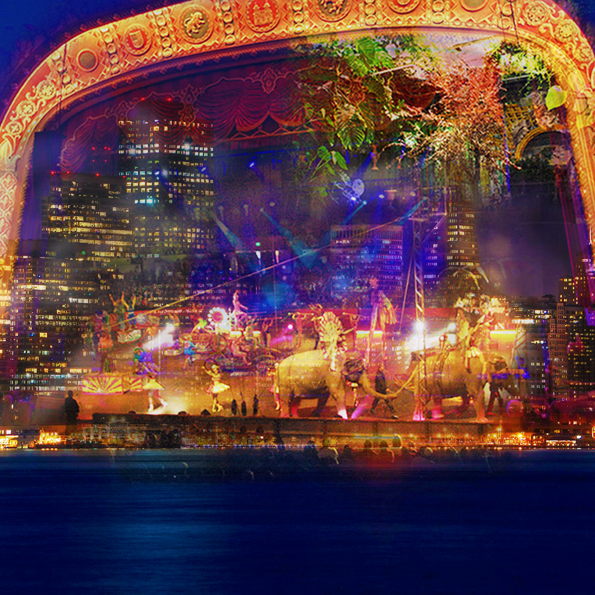

This collage, created in Photoshop, shows her world. It is a circus hidden behind the city skyline, surrounded by portals and enchanted gardens. She hides out in the circus and secretly lives there, blending in with the performers and illusions. There’s music playing all the time — loud circus tunes with a smoky vibe. It’s busy, full of people, and set in an urban environment.
